研究定位與證據邊界
研究國道三號龍潭→大溪北向，以四站 VD 的三類壅塞 Y 為預測目標。完整 OD 需事後才知道 D，不作正式提前預警輸入；改用預測時點可取得的 VD 與歷史 O 需求。主分析預測 30 分鐘後，15 分鐘為敏感度比較。
本輪完成情況
保存 1,501,986 筆逐配置預測及 120 份模型權重於本機；原始旅次、完整機率與大型 checkpoint 不公開。查看驗收紀錄。
A｜O 分群有沒有改善預測？
2024 三折 LightGBM、30 分鐘預測。M0=Baseline、M1=ALL、M2=Top20+OTHER、M3=K5、M4=K10、M5=K20。表內為相同折與樣本的平均指標。
| 配置 | Y2 AP | Macro-F1 | Log loss |
|---|---|---|---|
| M0 Baseline | 0.7306 | 0.6368 | 0.2133 |
| M1 ALL | 0.7301 | 0.6369 | 0.2145 |
| M2 Top20 | 0.7181 | 0.6328 | 0.2196 |
| M3 K=5 | 0.7346 | 0.6333 | 0.2156 |
| M4 K=10 | 0.7328 | 0.6348 | 0.2215 |
| M5 K=20 | 0.7301 | 0.6394 | 0.2182 |
解讀：K=5 的 Y2 AP 略高於 Baseline，差距約 0.004；增額 AP 的日期區塊信賴區間跨零，尚不能宣稱穩定提升，因此暫保留 Baseline。
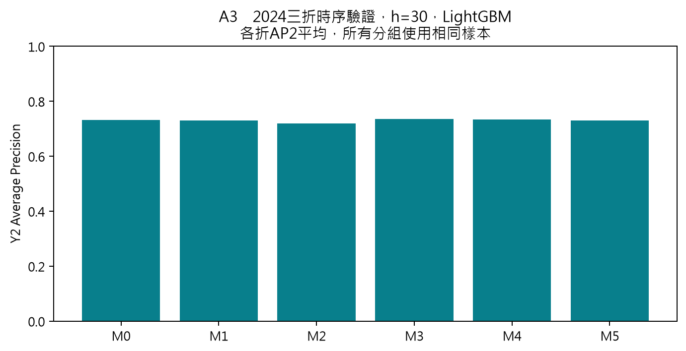
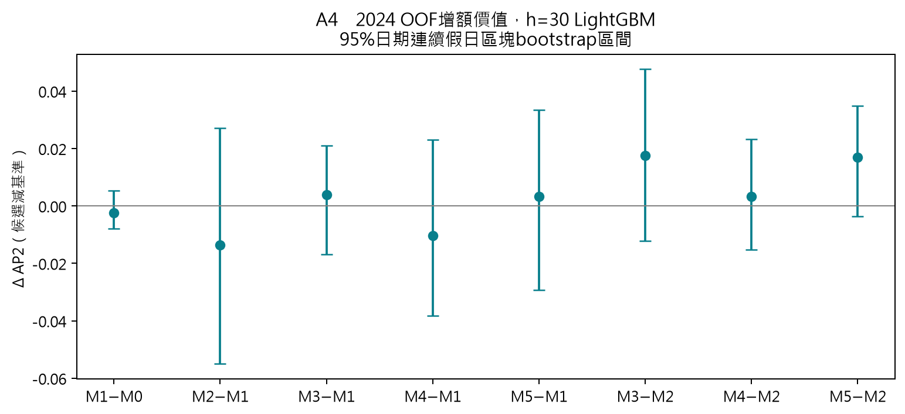
B｜P/Q 歷史需求改善
P+Q 以抵達延遲分配調整需求時間，較單用 P 能降低預期抵達需求的誤差；但需求估計更準，不代表壅塞分類一定更準。改善後 P/Q 在 Y2 AP、Macro-F1 與 Log loss 上仍未一致優於 Baseline。
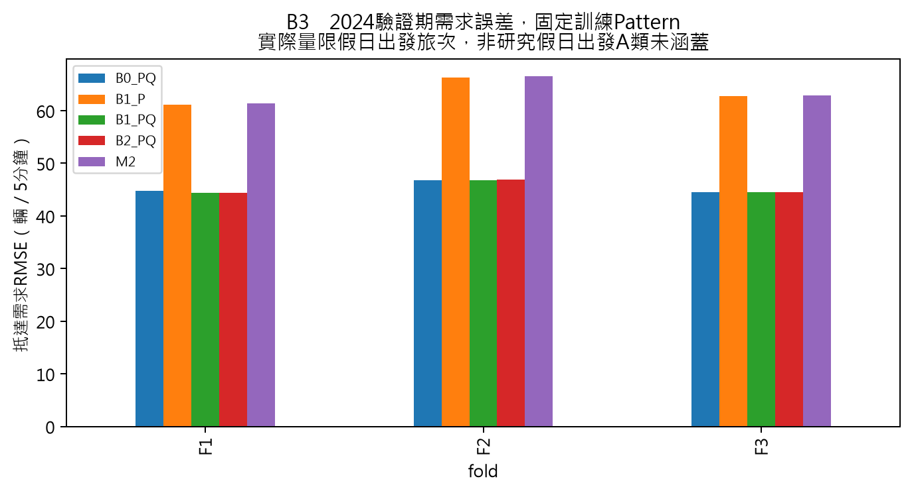
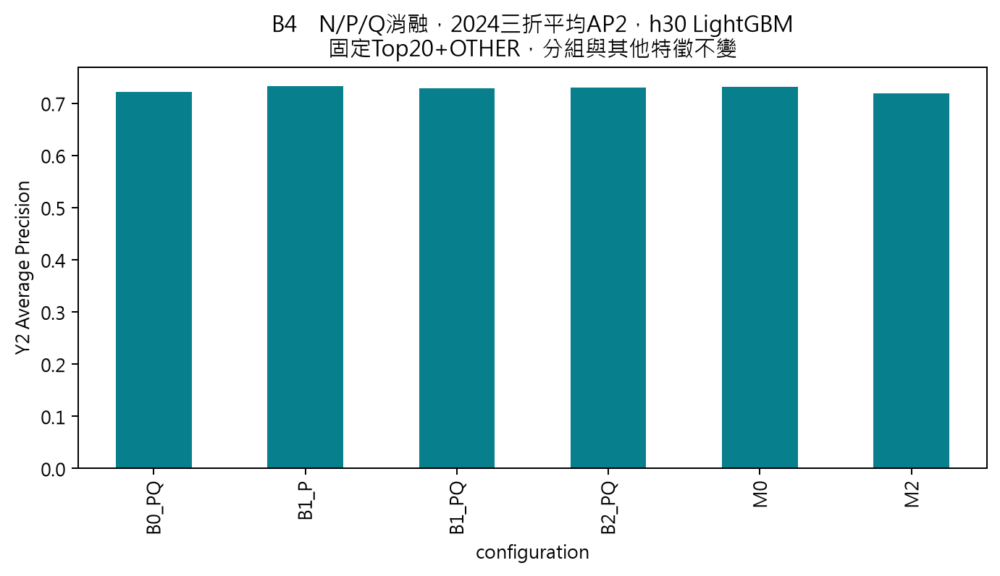
297 個 O 為 V3 兩年假日瓶頸抵達母體；341 個 O 為第一季完整假日出發母體，兩者不可直接混用分子與分母。非假日出發的跨日 A 類仍需完整稽核。
C｜局部壅塞 Y=1
2025 探索性回測中，原始 C0 的 Y1 Recall 為 26.76%；只調整決策門檻的 C1 提高至 55.79%，同時保留 Y2 Recall 80.52%，但會增加 Y0 誤判為 Y1。提高 Y1 類別權重的 C2 會降低 Y2 Recall，不建議直接替換主模型。
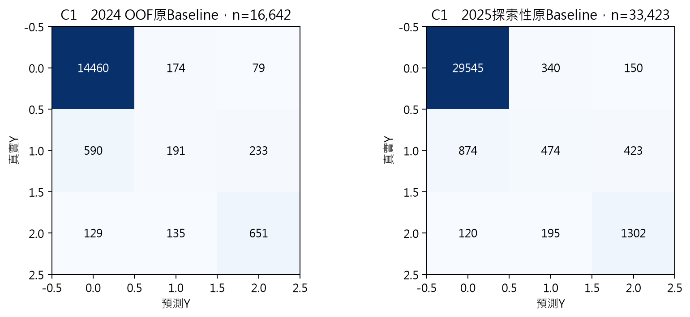
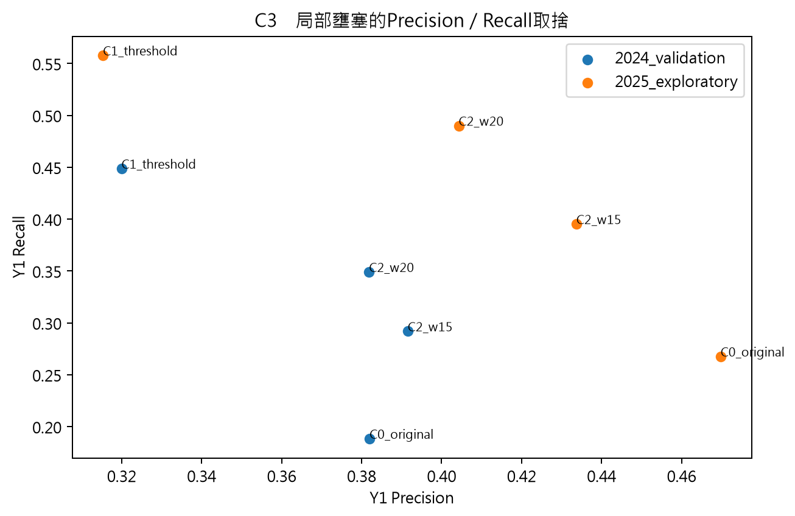
D｜15／30 分鐘事件預警
在相同的 111 個 Y2 onset、同一事件風險集下，30 分鐘 D0 命中 74 件，成本敏感 D1 命中 86 件；但已確認的每日誤報 episode 由 1.57 增加至 2.32。111 件中僅 23 件是前 30 分鐘完全沒有 Y2 的 clean onset，不能將所有命中都解讀為新事件的事前預警。
Rejection 能減少錯誤宣稱暢通，但增加複核工作量；尚未有實際人力成本，不能宣稱營運成本較低。新舊報告事件風險集不同，不應直接混合 11/12 與本輪事件命中數。
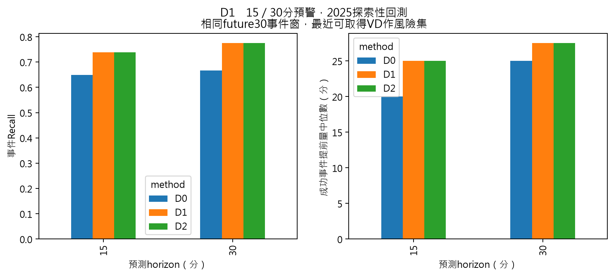
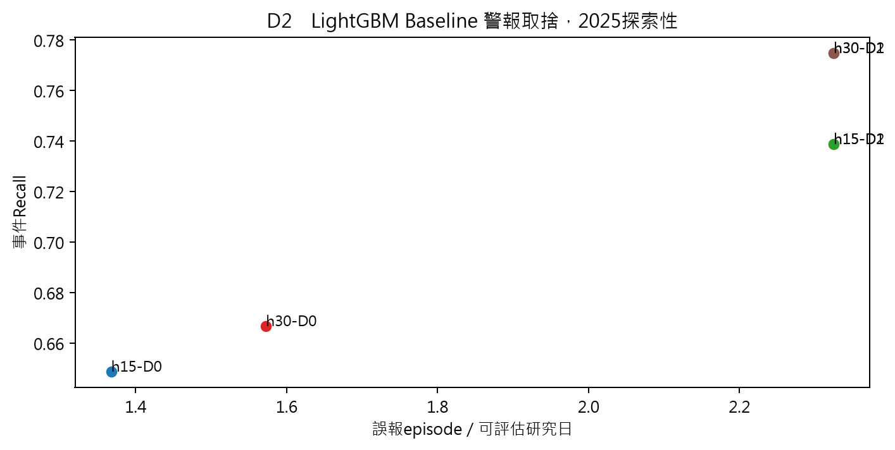
E｜歷史回放儀表板
已建立五頁 Streamlit：Overview、Traffic History、O Historical Demand、Prediction Comparison、Event Replay。可選日期、五分鐘格、15/30 分鐘、模型與 D0/D1/D2 決策；使用真實保存機率，未來真值僅於開啟事後答案時顯示。
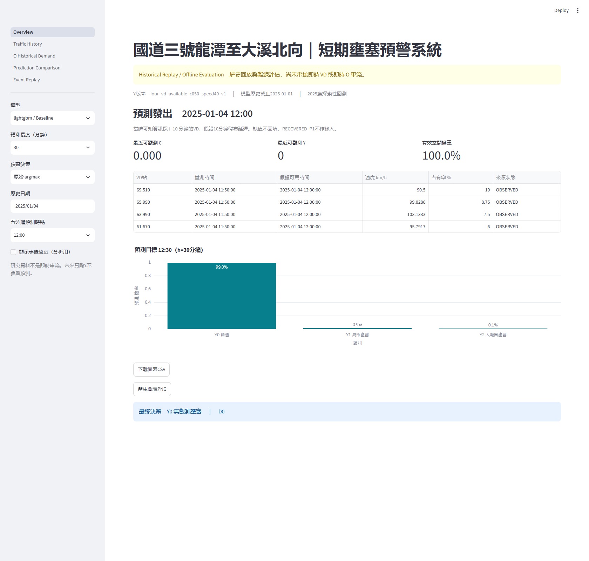
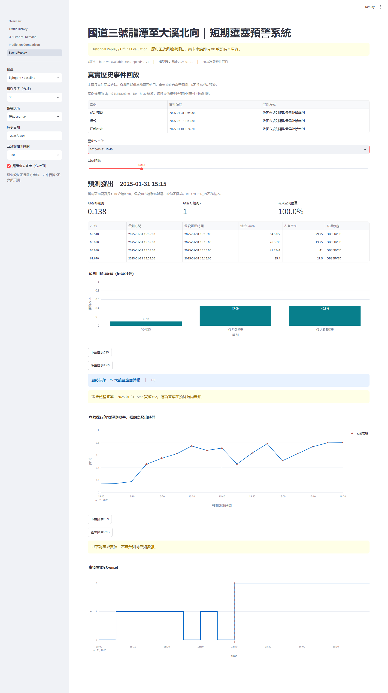
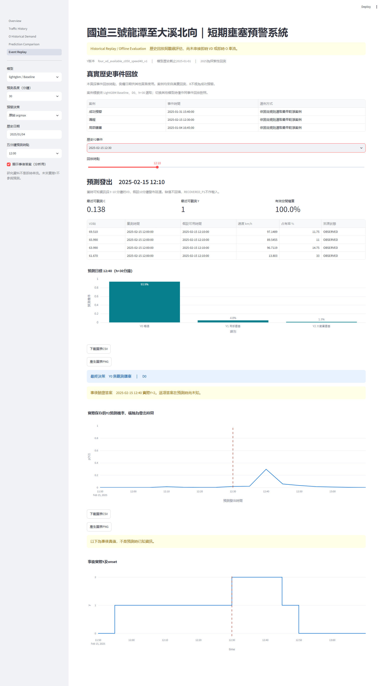
python -m streamlit run dashboard/app.py。研究資料、公式與下一步
下一步優先核對 VD 真正發布時間、跨日 A 類需求母體與午夜偏差，確定成本與人工複核流程；若取得同口徑 2026 年資料，再以凍結設定做獨立驗證。